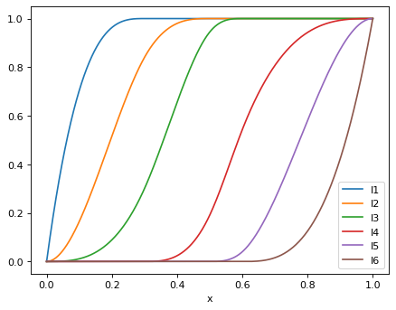
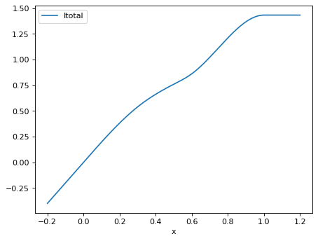
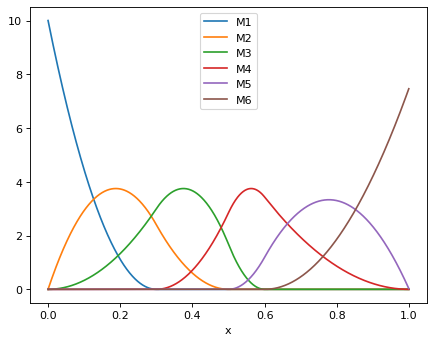

ispline¶
Implements Isplines, which are monotonic spline functions that are
defined in terms of Msplines. Also implements Isplines_total
for the weighted sum of a Isplines family.
See Ramsay (1988) for details about these splines, and also note the corrections in the Praat manual to the errors in the I-spline formula by Ramsay (1988).
- class dms_variants.ispline.Isplines(order, mesh, x)[source]¶
Bases:
objectImplements I-splines (see Ramsay (1988)).
- Parameters
order (int) – Sets
Isplines.order.mesh (array-like) – Sets
Isplines.mesh.x (numpy.ndarray) – Sets
Isplines.x.
- order¶
Order of spline, \(k\) in notation of Ramsay (1988). Note that the degree of the I-spline is equal to \(k\), while the associated M-spline has order \(k\) but degree \(k - 1\).
- Type
int
- mesh¶
Mesh sequence, \(\xi_1 < \ldots < \xi_q\) in the notation of Ramsay (1988). This class implements fixed mesh sequences.
- Type
numpy.ndarray
- n¶
Number of members in spline, denoted as \(n\) in Ramsay (1988). Related to number of points \(q\) in the mesh and the order \(k\) by \(n = q - 2 + k\).
- Type
int
- lower¶
Lower end of interval spanned by the splines (first point in mesh).
- Type
float
- upper¶
Upper end of interval spanned by the splines (last point in mesh).
- Type
float
Note
The methods of this class cache their results and return immutable numpy arrays. Do not make these arrays mutable and change their values, as this will lead to invalid caching.
Example
Short examples to demonstrate and test
Isplines:>>> import itertools >>> import numpy >>> import pandas as pd >>> import scipy.optimize >>> from dms_variants.ispline import Isplines
>>> order = 3 >>> mesh = [0.0, 0.3, 0.5, 0.6, 1.0] >>> x = numpy.array([0, 0.2, 0.3, 0.4, 0.8, 0.99999]) >>> isplines = Isplines(order, mesh, x) >>> isplines.order 3 >>> isplines.mesh array([0. , 0.3, 0.5, 0.6, 1. ]) >>> isplines.n 6 >>> isplines.lower 0.0 >>> isplines.upper 1.0
Evaluate the I-splines at some selected points:
>>> for i in range(1, isplines.n + 1): ... print(f"I{i}: {numpy.round(isplines.I(i), 2)}") ... I1: [0. 0.96 1. 1. 1. 1. ] I2: [0. 0.52 0.84 0.98 1. 1. ] I3: [0. 0.09 0.3 0.66 1. 1. ] I4: [0. 0. 0. 0.02 0.94 1. ] I5: [0. 0. 0. 0. 0.58 1. ] I6: [0. 0. 0. 0. 0.13 1. ]
Check that gradients are correct for
Isplines.dI_dx():>>> for i, xval in itertools.product(range(1, isplines.n + 1), x): ... xval = numpy.array([xval]) ... def func(xval): ... return Isplines(order, mesh, xval).I(i) ... def dfunc(xval): ... return Isplines(order, mesh, xval).dI_dx(i) ... err = scipy.optimize.check_grad(func, dfunc, xval) ... if err > 1e-5: ... raise ValueError(f"excess err {err} for {i}, {xval}")
Plot the I-splines in Fig. 1 of Ramsay (1988):
>>> xplot = numpy.linspace(0, 1, 1000) >>> isplines_xplot = Isplines(order, mesh, xplot) >>> data = {'x': xplot} >>> for i in range(1, isplines.n + 1): ... data[f"I{i}"] = isplines_xplot.I(i) >>> df = pd.DataFrame(data) >>> _ = df.plot(x='x')
 - I(i)[source]¶
Evaluate spline \(I_i\) at point(s)
Isplines.x.- Parameters
i (int) – Spline member \(I_i\), where \(1 \le i \le\)
Isplines.n.- Returns
The values of the I-spline at each point in
Isplines.x.- Return type
numpy.ndarray
Note
The spline is evaluated using the formula given in the Praat manual, which corrects some errors in the formula provided by Ramsay (1988):
\[\begin{split}I_i\left(x\right) = \begin{cases} 0 & \rm{if\;} i > j, \\ 1 & \rm{if\;} i < j - k, \\ \sum_{m=i+1}^j \left(t_{m+k+1} - t_m\right) M_m\left(x \mid k + 1\right) / \left(k + 1 \right) & \rm{otherwise}, \end{cases}\end{split}\]where \(j\) is the index such that \(t_j \le x < t_{j+1}\) (the \(\left\{t_j\right\}\) are the
Msplines.knotsfor a M-spline of order \(k + 1\)) and \(k\) isIsplines.order.
- dI_dx(i)[source]¶
Derivative of
Isplines.I()byIsplines.x.- Parameters
i (int) – Same meaning as for
Isplines.I().- Returns
Derivative of I-spline with respect to
Isplines.x.- Return type
numpy.ndarray
Note
The derivative is calculated from the equation in
Isplines.I():\[\begin{split}\frac{\partial I_i\left(x\right)}{\partial x} = \begin{cases} 0 & \rm{if\;} i > j \rm{\; or \;} i < j - k, \\ \sum_{m=i+1}^j\left(t_{m+k+1} - t_m\right) \frac{\partial M_m\left(x \mid k+1\right)}{\partial x} \frac{1}{k + 1} & \rm{otherwise}. \end{cases}\end{split}\]
- property j¶
\(j\) as defined in
Isplines.I().- Type
numpy.ndarray
- property x¶
Points at which spline is evaluated.
- Type
numpy.ndarray
- class dms_variants.ispline.Isplines_total(order, mesh, x)[source]¶
Bases:
objectEvaluate the weighted sum of an I-spline family (see Ramsay (1988)).
- Parameters
order (int) – Sets
Isplines_total.order.mesh (array-like) – Sets
Isplines_total.mesh.x (numpy.ndarray) – Sets
Isplines_total.x.
- order¶
See
Isplines.order.- Type
int
- mesh¶
See
Isplines.mesh.- Type
numpy.ndarray
- n¶
See
Isplines.n.- Type
int
- lower¶
See
Isplines.lower.- Type
float
- upper¶
See
Isplines.upper.- Type
float
Note
Evaluates the full interpolating curve from the I-splines. When \(x\) falls within the lower \(L\) and upper \(U\) bounds of the range covered by the I-splines (\(L \le x \le U\)), then this curve is defined as:
\[I_{\rm{total}}\left(x\right) = w_{\rm{lower}} + \sum_i w_i I_i\left(x\right).\]When \(x\) is outside the range of the mesh covered by the splines, the values are linearly extrapolated from first derivative at the bounds. Specifically, if \(x < L\) then:
\[I_{\rm{total}}\left(x\right) = I_{\rm{total}}\left(L\right) + \left(x - L\right) \left.\frac{\partial I_{\rm{total}}\left(y\right)} {\partial y}\right\rvert_{y=L},\]and if \(x > U\) then:
\[I_{\rm{total}}\left(x\right) = I_{\rm{total}}\left(U\right) + \left(x - U\right) \left.\frac{\partial I_{\rm{total}}\left(y\right)} {\partial y}\right\rvert_{y=U}.\]Note also that:
\[\begin{split}I_{\rm{total}}\left(L\right) &=& w_{\rm{lower}}, \\ I_{\rm{total}}\left(U\right) &=& w_{\rm{lower}} + \sum_i w_i\end{split}\]Example
Short examples to demonstrate and test
Isplines_total:>>> import itertools >>> import numpy >>> import pandas as pd >>> import scipy.optimize >>> from dms_variants.ispline import Isplines_total
>>> order = 3 >>> mesh = [0.0, 0.3, 0.5, 0.6, 1.0] >>> x = numpy.array([0, 0.2, 0.3, 0.4, 0.8, 0.99999]) >>> isplines_total = Isplines_total(order, mesh, x) >>> weights = numpy.array([1.2, 2, 1.2, 1.2, 3, 0]) / 6 >>> numpy.round(isplines_total.Itotal(weights, w_lower=0), 2) array([0. , 0.38, 0.54, 0.66, 1.21, 1.43])
Now calculate using some points that require linear extrapolation outside the mesh and also have a nonzero w_lower:
>>> x2 = numpy.array([-0.5, -0.25, 0, 0.01, 1.0, 1.5]) >>> isplines_total2 = Isplines_total(order, mesh, x2) >>> numpy.round(isplines_total2.Itotal(weights, w_lower=1), 3) array([0. , 0.5 , 1. , 1.02 , 2.433, 2.433])
Test
Isplines_total.dItotal_dx():>>> x_deriv = numpy.array([-0.5, -0.25, 0, 0.01, 0.5, 0.7, 1.0, 1.5]) >>> for xval in x_deriv: ... xval = numpy.array([xval]) ... def func(xval): ... return Isplines_total(order, mesh, xval).Itotal(weights, 0) ... def dfunc(xval): ... return Isplines_total(order, mesh, xval).dItotal_dx(weights) ... err = scipy.optimize.check_grad(func, dfunc, xval) ... if err > 1e-5: ... raise ValueError(f"excess err {err} for {xval}")
>>> (isplines_total.dItotal_dw_lower() == numpy.ones(x.shape)).all() True
Test
Isplines_total.dItotal_dweights():>>> isplines_total3 = Isplines_total(order, mesh, x_deriv) >>> wl = 1.5 >>> (isplines_total3.dItotal_dweights(weights, wl).shape == ... (len(x_deriv), len(weights))) True >>> weightslist = list(weights) >>> for ix, iw in itertools.product(range(len(x_deriv)), ... range(len(weights))): ... w = numpy.array([weightslist[iw]]) ... def func(w): ... iweights = numpy.array(weightslist[: iw] + ... list(w) + ... weightslist[iw + 1:]) ... return isplines_total3.Itotal(iweights, wl)[ix] ... def dfunc(w): ... iweights = numpy.array(weightslist[: iw] + ... list(w) + ... weightslist[iw + 1:]) ... return isplines_total3.dItotal_dweights(iweights, wl)[ix, ... iw] ... err = scipy.optimize.check_grad(func, dfunc, w) ... if err > 1e-6: ... raise ValueError(f"excess err {err} for {ix, iw}")
Plot the total of the I-spline family shown in Fig. 1 of Ramsay (1988), adding some linear extrapolation outside the mesh range:
>>> xplot = numpy.linspace(-0.2, 1.2, 1000) >>> isplines_totalplot = Isplines_total(order, mesh, xplot) >>> df = pd.DataFrame({'x': xplot, ... 'Itotal': isplines_totalplot.Itotal(weights, 0)}) >>> _ = df.plot(x='x', y='Itotal')
 - Itotal(weights, w_lower)[source]¶
Weighted sum of spline family at points
Isplines_total.x.- Parameters
weights (array-like) – Nonnegative weights \(w_i\) of members \(I_i\) of spline family, should be of length equal to
Isplines.n.w_lower (float) – The value at the lower bound \(L\) of the spline range, \(w_{\rm{lower}}\).
- Returns
\(I_{\rm{total}}\) for each point in
Isplines_total.x.- Return type
numpy.ndarray
- dItotal_dw_lower()[source]¶
Deriv of
Isplines_total.Itotal()by \(w_{\rm{lower}}\).- Returns
\(\frac{\partial{I_{\rm{total}}}}{\partial w_{\rm{lower}}}\), which is just one for all
Isplines_total.x.- Return type
numpy.ndarray
- dItotal_dweights(weights, w_lower)[source]¶
Derivative of
Isplines_total.Itotal()by \(w_i\).- Parameters
weights (array-like) – Same meaning as for
Isplines.Itotal().w_lower (float) – Same meaning as for
Isplines.Itotal().
- Returns
Array is of shape (len(x), len(weights)), and element ix, iweight gives derivative with respect to weight weights[iweight] at element [ix] of
Isplines_total.x.- Return type
numpy.ndarray
Note
The derivative is:
\[\begin{split}\frac{\partial I_{\rm{total}}\left(x\right)}{\partial w_i} = \begin{cases} I_i\left(x\right) & \rm{if\;} L \le x \le U, \\ I_i\left(L\right) + \left(x-L\right) \left.\frac{\partial I_i\left(y\right)}{\partial y}\right\vert_{y=L} & \rm{if\;} x < L, \\ I_i\left(U\right) + \left(x-U\right) \left.\frac{\partial I_i\left(y\right)}{\partial y}\right\vert_{y=U} & \rm{if\;} x > U. \end{cases}\end{split}\]Note that:
\[\begin{split}I_i\left(L\right) &=& 0 \\ I_i\left(U\right) &=& 1.\end{split}\]
- dItotal_dx(weights)[source]¶
Deriv
Isplines_total.Itotal()byIsplines_total.x.Note
Derivatives calculated from equations in
Isplines_total.Itotal():\[\begin{split}\frac{\partial I_{\rm{total}}\left(x\right)}{\partial x} = \begin{cases} \sum_i w_i \frac{\partial I_i\left(x\right)}{\partial x} & \rm{if\;} L \le x \le U, \\ \left.\frac{\partial I_{\rm{total}}\left(y\right)} {\partial y}\right\rvert_{y=L} & \rm{if\;} x < L, \\ \left.\frac{\partial I_{\rm{total}}\left(y\right)} {\partial y}\right\rvert_{y=U} & \rm{otherwise}. \end{cases}\end{split}\]Note that
\[\begin{split}\left.\frac{\partial I_{\rm{total}}\left(y\right)} {\partial y}\right\rvert_{y=L} &=& \sum_i w_i \left.\frac{\partial I_i\left(y\right)}{\partial y} \right\rvert_{y=L} \\ \left.\frac{\partial I_{\rm{total}}\left(y\right)} {\partial y}\right\rvert_{y=U} &=& \sum_i w_i \left.\frac{\partial I_i\left(y\right)}{\partial y} \right\rvert_{y=U}\end{split}\]- Parameters
weights (array-like) – Same meaning as for
Isplines_total.Itotal().- Returns
Derivative \(\frac{\partial I_{\rm{total}}}{\partial x}\) for each point in
Isplines_total.x.- Return type
numpy.ndarray
- property x¶
Points at which spline is evaluated.
- Type
numpy.ndarray
- class dms_variants.ispline.Msplines(order, mesh, x)[source]¶
Bases:
objectImplements M-splines (see Ramsay (1988)).
- Parameters
order (int) – Sets
Msplines.order.mesh (array-like) – Sets
Msplines.mesh.x (numpy.ndarray) – Sets
Msplines.x.
- order¶
Order of spline, \(k\) in notation of Ramsay (1988). Polynomials are of degree \(k - 1\).
- Type
int
- mesh¶
Mesh sequence, \(\xi_1 < \ldots < \xi_q\) in the notation of Ramsay (1988). This class implements fixed mesh sequences.
- Type
numpy.ndarray
- n¶
Number of members in spline, denoted as \(n\) in Ramsay (1988). Related to number of points \(q\) in the mesh and the order \(k\) by \(n = q - 2 + k\).
- Type
int
- knots¶
The knot sequence, \(t_1, \ldots, t_{n + k}\) in the notation of Ramsay (1988).
- Type
numpy.ndarray
- lower¶
Lower end of interval spanned by the splines (first point in mesh).
- Type
float
- upper¶
Upper end of interval spanned by the splines (last point in mesh).
- Type
float
Note
The methods of this class cache their results and return immutable numpy arrays. Do not make those arrays mutable and change their values as this will lead to invalid caching.
Example
Demonstrate and test
Msplines:>>> import functools >>> import itertools >>> import numpy >>> import pandas as pd >>> import scipy.optimize >>> from dms_variants.ispline import Msplines
>>> order = 3 >>> mesh = [0.0, 0.3, 0.5, 0.6, 1.0] >>> x = numpy.array([0, 0.2, 0.3, 0.4, 0.8, 0.99999]) >>> msplines = Msplines(order, mesh, x) >>> msplines.order 3 >>> msplines.mesh array([0. , 0.3, 0.5, 0.6, 1. ]) >>> msplines.n 6 >>> msplines.knots array([0. , 0. , 0. , 0.3, 0.5, 0.6, 1. , 1. , 1. ]) >>> msplines.lower 0.0 >>> msplines.upper 1.0
Evaluate the M-splines at some selected points:
>>> for i in range(1, msplines.n + 1): ... print(f"M{i}: {numpy.round(msplines.M(i), 2)}") ... M1: [10. 1.11 0. 0. 0. 0. ] M2: [0. 3.73 2.4 0.6 0. 0. ] M3: [0. 1.33 3. 3.67 0. 0. ] M4: [0. 0. 0. 0.71 0.86 0. ] M5: [0. 0. 0. 0. 3.3 0. ] M6: [0. 0. 0. 0. 1.88 7.5 ]
Check that the gradients are correct:
>>> for i, xval in itertools.product(range(1, msplines.n + 1), x): ... xval = numpy.array([xval]) ... def func(xval): ... return Msplines(order, mesh, xval).M(i) ... def dfunc(xval): ... return Msplines(order, mesh, xval).dM_dx(i) ... err = scipy.optimize.check_grad(func, dfunc, xval) ... if err > 1e-5: ... raise ValueError(f"excess err {err} for {i}, {xval}")
Plot the M-splines in in Fig. 1 of Ramsay (1988):
>>> xplot = numpy.linspace(0, 1, 1000, endpoint=False) >>> msplines_plot = Msplines(order, mesh, xplot) >>> data = {'x': xplot} >>> for i in range(1, msplines_plot.n + 1): ... data[f"M{i}"] = msplines_plot.M(i) >>> df = pd.DataFrame(data) >>> _ = df.plot(x='x')
 - M(i, k=None, invalid_i='raise')[source]¶
Evaluate spline \(M_i\) at point(s)
Msplines.x.- Parameters
i (int) – Spline member \(M_i\), where \(1 \le i \le\)
Msplines.n.k (int or None) – Order of spline. If None, assumed to be
Msplines.order.invalid_i ({'raise', 'zero'}) – If i is invalid, do we raise an error or return 0?
- Returns
The values of the M-spline at each point in
Msplines.x.- Return type
numpy.ndarray
Note
The spline is evaluated using the recursive relationship given by Ramsay (1988):
\[\begin{split}M_i\left(x \mid k=1\right) &=& \begin{cases} 1 / \left(t_{i+1} - t_i\right), & \rm{if\;} t_i \le x < t_{i+1} \\ 0, & \rm{otherwise} \end{cases} \\ M_i\left(x \mid k > 1\right) &=& \begin{cases} \frac{k\left[\left(x - t_i\right) M_i\left(x \mid k-1\right) + \left(t_{i+k} -x\right) M_{i+1}\left(x \mid k-1\right) \right]} {\left(k - 1\right)\left(t_{i + k} - t_i\right)}, & \rm{if\;} t_i \le x < t_{i+k} \\ 0, & \rm{otherwise} \end{cases}\end{split}\]
- dM_dx(i, k=None, invalid_i='raise')[source]¶
Derivative of
Msplines.M()by toMsplines.x.- Parameters
i (int) – Same as for
Msplines.M().k (int or None) – Same as for
Msplines.M().invalid_i ({'raise', 'zero'}) – Same as for
Msplines.M().
- Returns
Derivative of M-spline with respect to
Msplines.x.- Return type
numpy.ndarray
Note
The derivative is calculated from the equation in
Msplines.M():\[\begin{split}\frac{\partial M_i\left(x \mid k=1\right)}{\partial x} &=& 0 \\ \frac{\partial M_i\left(x \mid k > 1\right)}{\partial x} &=& \begin{cases} \frac{k\left[\left(x - t_i\right) \frac{\partial M_i\left(x \mid k-1\right)}{\partial x} + M_i\left(x \mid k-1\right) + \left(t_{i+k} -x\right) \frac{\partial M_{i+1}\left(x \mid k-1\right)} {\partial x} - M_{i+1}\left(x \mid k-1\right) \right]} {\left(k - 1\right)\left(t_{i + k} - t_i\right)}, & \rm{if\;} t_i \le x < t_{i+1} \\ 0, & \rm{otherwise} \end{cases}\end{split}\]
- property x¶
Points at which spline is evaluated.
- Type
numpy.ndarray


{kind=link}
{kind=link}
{kind=link}
{kind=link}
{kind=link}
{kind=link}